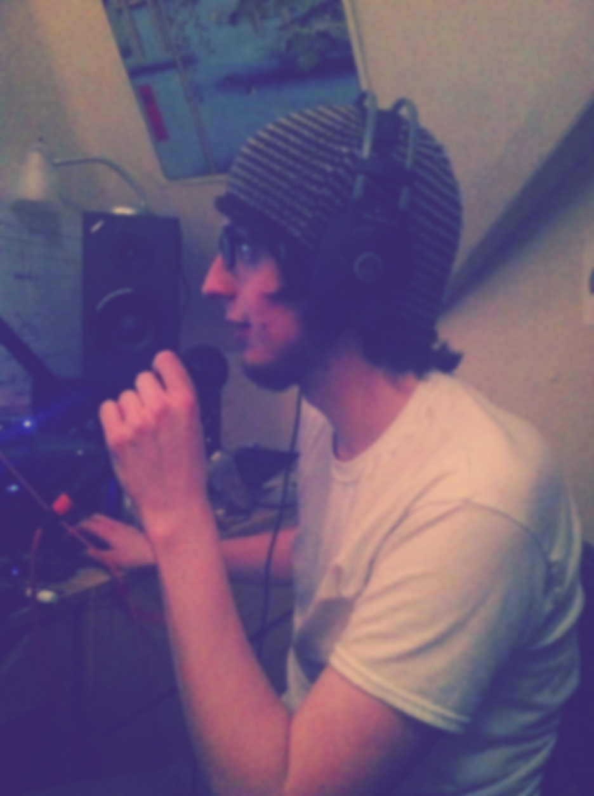

Track Listing / Lyrics
- This Old World
- Come Back
- Nor Will I Fall
- Never Return
- Our Way
Can't we open a blank page.
Release this room burn the sage,
of old memories we no longer follow,
while remembering we are not as hollow
We create our own bliss,
nothing else has to exist,
we can live in this old world,
our expectations unfulfilled.
Can't we reveal old bonds broken,
As we feel our thoughts awoken,
There's always time for rebuilding,
because we are the strong and we are the willing
We create our own bliss,
nothing else has to exist,
we can live in this old world,
our expectations unfulfilled.
I wait for awhile,
I pace and pile on,
all of my dreams.
the more i think,
the slower I go,
it seems,
that I'm stuck upon,
something simple,
it's elementary,
come back to me,
come back to me,
im wrapped up in,
things that never,
should have been.
my hopes are spent,
and with them went,
my last defense,
I am an open wound,
alone in this room,
but I am going home soon.
come back to me,
come back to me,
I don't know if I can,
life my life's span,
this far from you.
I haven't a plan,
I can't even command,
my own will.
It stop and it starts,
racing with my heart,
while my mind is still,
it can't wait for long,
and I can't stay strong enough,
to get through,
come back to me
Credits
Personel
Jasper Boyd, vocals, guitar, upright, banjolele, melodica
Theo Van Dyke, trumpet
Jonathan Dana, drums
Recording
Mixed by Jasper Boyd
Mastered by Mike Tierney
Special Thanks
To my family who was woken up during the production of this EP many times.
and to all my past music instructors who have taught me all that I know.
About
The Purest Cacophony was started by myself, in the fall of 2012. As of right now I am the only permanent member although I love collaboration with fellow musicians.
With this project my only goal is to create music that is honest, and meaningful. My only hope being that you draw as much strength from the sound as I do.
Thanks for listening,
Jasper
Shows
They are currently no shows listed. Please contact me if you are interested in having me perform at your venue.